2015年12月17日アップデート
2015年12月17日 アップデートの変更内容一覧
「協会任務担当官」新規クエスト追加
「特殊装備商人」「コイン商人」実装
「冒険家協会バー」新機能追加
ソロパーティー作成機能追加
高レベル向け新マップ追加
レベル上限の変更
5次転生実装
ログイン時の数字認証ウィンドウサイズ変更
「Caps Lock」チェックシステム導入
「古美術商ネネ」新機能追加
ギルドメンバー数の上限変更
新アイテム「ブレイブブルーム」「インテリジェンステイル」「インテリジェンスバスーン」実装
「ブレイブバトルアックスNx」武器性能の一部変更
不具合修正
不具合
「協会任務担当官」新規クエスト追加
| 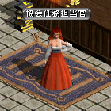 |
冒険家協会ブルンネンシュティグ本部の 協会任務担当官より、 |
| 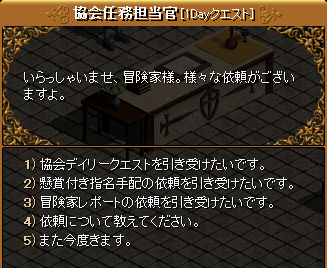 | ?協会デイリークエスト ?懸賞付き指名手配 ?冒険家レポート 3つの新たなクエストを受諾することができます。 |
協会デイリークエスト
Lv1〜一日一回、[討伐任務]または[伝達任務]どちらかを選択して受けることができます。
[討伐任務]は本体Lv-50以上のモンスターを100匹倒し、
[伝達任務]は協会の書簡を協会秘密要員4人に届けます。
報酬は、経験値（Lvによる）+冒険団コイン1個。
懸賞付き指名手配クエスト
Lv150〜一日一回、受けることができます。
受諾時のLvによって異なる指定のモンスター1匹を討伐するクエストです。
報酬は、経験値（Lvによる）+冒険団コイン1個。
詳細は ⇒ 懸賞付き指名手配 - …
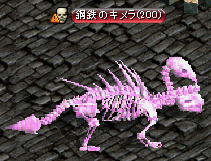 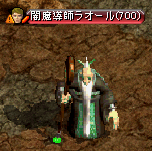
| 受諾時のLv | マップ | 対象モンスター |
|---|---|---|
| 150〜199 | 魔法傭兵の墓 Ｂ１ | 虐殺者ナッシュ |
| 200〜249 | 名も無い崩れた塔 １Ｆ | 鋼鉄のキメラ |
| 250〜299 | 小さい傭兵の墓 Ｂ１ | 左足のダディー |
| 300〜349 | スウェブタワー １１Ｆ | 暴走ゴレーム |
| 350〜399 | フォーリン望楼 地下 | 流血のファイク |
| 400〜449 | 暴かれた納骨堂 Ｂ６ | 捕食者ラフォン |
| 450〜499 | ダークエルフ王宮 ２Ｆ | 暗殺者エルオーン |
| 500〜549 | 呪いを受けたミズナの洞窟 / 宝石の部屋 | 大盗賊フランク |
| 550〜599 | 名も無き遺跡 Ｂ１ | 守護者フォリー |
| 600〜649 | ガルカス悪魔軍集結地 Ｂ１ | 猿王バット |
| 650〜699 | 時の森（2層目） | 永劫のファントム |
| 700〜 | 神秘の洞窟 Ｂ２ | 闇魔導師ラオール |
冒険家レポートクエスト
（1）〜（38）まであり、4次転生Lv650まで段階的に続く連作クエストです。
報酬の経験値が非常に美味しいです。
詳細は ⇒ 冒険家レポート
 |
取引・銀行保管不可 破壊可能 |
「特殊装備商人」「コイン商人」実装
ユニークアイテムをレンタルしてくれる特殊装備商人と、冒険団コインとアイテムを交換してくれるコイン商人が
実装されました。
（12月24日アップデートにて実装）
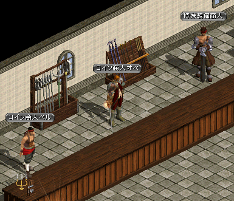
| 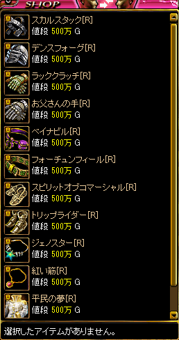 |
特殊装備商人では、 500万Gでユニークアイテムをレンタル することができます。 |
| 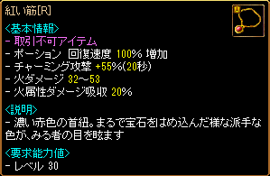 |
レンタルできるユニークアイテムは すべて要求Lv30 |
| 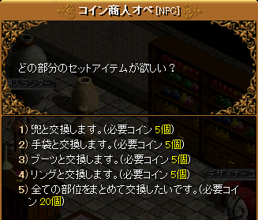 | コイン商人オベでは、 冒険団コイン5個で要求Lv1のセットアイテム 仄かな神獣の力 と交換することができます。 <セット効果 4個> 火ダメージ 150〜200 風ダメージ 100〜150 スタン 7Frame 水ダメージ 50〜100 コールド 7Frame 光ダメージ 1〜50 5秒の間 命中, 回避低下 |
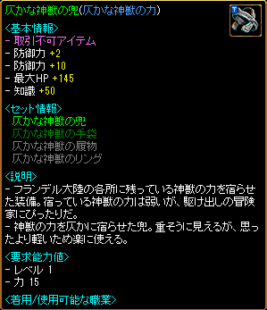 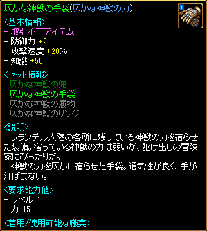
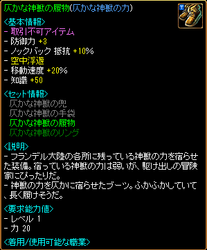 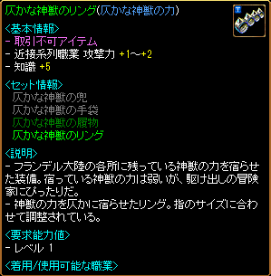
| 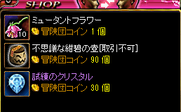 | コイン商人ペルでは、 冒険団コインと不思議な紺碧の壺などのアイテムを 交換することができます。 |
「冒険家協会バー」新機能追加
冒険家協会バーにギルド戦申請事務所本部が追加されました。
ギルド戦申し込みNPCパルペナがおり、ギルド戦フィールドへの転送ゾーンなどもあります。
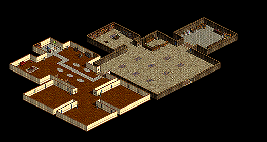
| 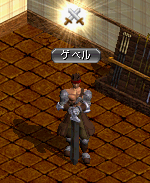 |
またギルド戦専用レンタル武器NPCゲベルが追加されました。 |
| 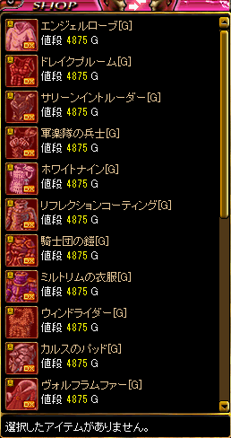 | ギルド戦専用の武器や防具を5000Gで レンタルすることができます。 ※ギルド戦フィールドでのみ装備可能 （装備要求値を満たしていても、装備不可状態のアイコンで表示され、ギルド戦フィールド以外で装備することはできません。転送後に装備可能となります。） ※マップ移動やログアウトすると消滅 ※取引不可、ミニペットのエサとしての使用不可 ※リトルウイッチの武器は現在なし（後日追加） |
ソロパーティー作成機能追加
1人の状態で、パーティー募集を行えるようになりました。
「PT募集」ボタンを押し、パーティー説明などの必須事項を入力・選択し「完了」を押します。
※「通行用ポータルクリスタル」はソロパーティーでは獲得できません。
※ソロパーティーに複数申し込みがあった時に、1人を選択して複数パーティーリストに切り替わると、選択しなかったキャラクターの申し込みが自動的にキャンセルされ、申し込みリストから削除されます。

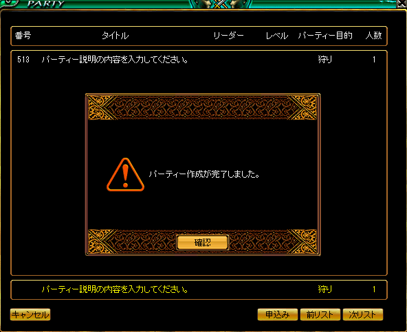
また、パーティーウィンドウの表示も変更されました。
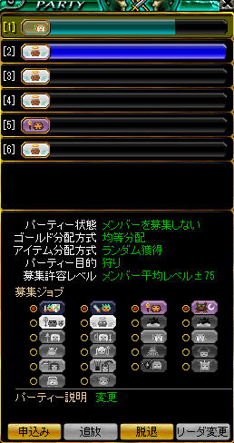
高レベル向け新マップ追加
Lv750〜950の高レベル向け新マップが8か所追加されました。
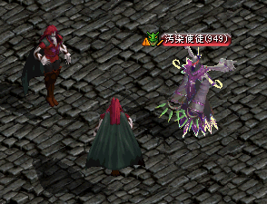
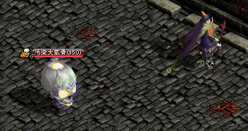
ブラックファイヤー外郭 Lv750〜800

深淵の地底湖外郭 Lv750〜800
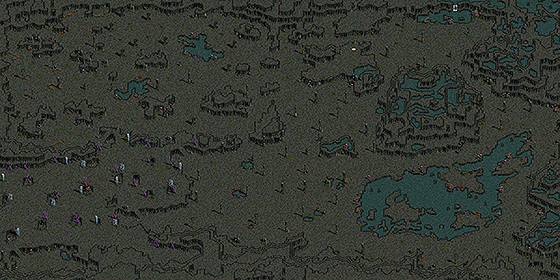
ブラックファイヤー中心地 Lv800〜875
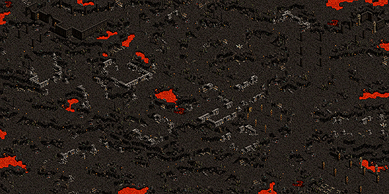
ブラックファイヤー洞窟 Lv800〜875
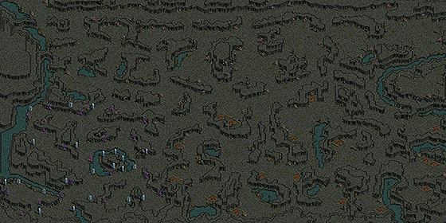
荒野の要塞 Lv850〜925
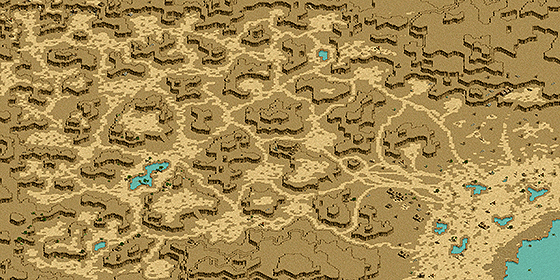
荒野の要塞入口 Lv850〜925
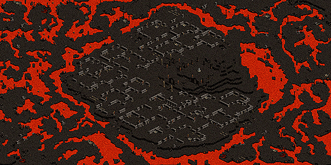
ブラックファイヤー隠されたダンジョン Lv925〜950
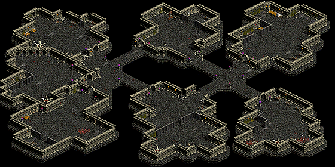
古代悪魔研究所 Lv925〜950
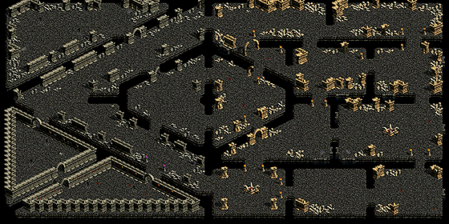
レベル上限の変更
キャラクターのレベル上限が900から1,000に変更されました。
ビーストテイマーのペットや召喚獣は、「褒める」でLv1000まで上昇させることは可能ですが、経験値獲得によるレベル上昇は999が上限となります。
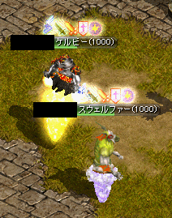
5次転生実装
5次転生クエストは、4次転生Lv900以上のキャラクターが受諾することができます。
クエスト完了時にステータス・スキルのボーナスポイントが500追加されます。
ログイン時の数字認証ウィンドウサイズ変更
ログイン画面に表示される数字認証画面ウィンドウが大きくなり、数字を入力しやすくなりました。
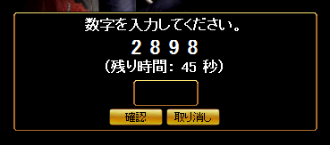
「Caps Lock」チェックシステム導入
「Caps Lock」がONになっている際に、ログイン画面で表示がされるようになりました。
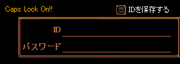
「古美術商ネネ」新機能追加
| 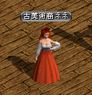 |
ギルドホールの古美術商ネネに結晶石を渡すと、RED STONEのかけら3〜10個とランダムで交換してくれるようになりました。 |
| 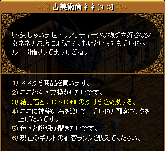 | 必要な結晶石の個数は、顧客ランクとギルドホールレベルによって異なります。 |
| 必要な結晶石の個数 | |||||
|---|---|---|---|---|---|
| GH1 | GH2 | GH3 | GH4 | GH5 | |
| 顧客ランク5 | 9 | 9 | 9 | 9 | 9 |
| 顧客ランク4 | 9 | 8 | 8 | 8 | 8 |
| 顧客ランク3 | 9 | 8 | 7 | 7 | 7 |
| 顧客ランク2 | 9 | 8 | 7 | 6 | 6 |
| 顧客ランク1 | 9 | 8 | 7 | 6 | 5 |
ギルドメンバー数の上限変更
ギルドホールの新NPC派遣官ベルントより、ギルドマスターが専用クエスト派遣官のお願いを受諾・完了させることで、ギルドメンバーの最大加入上限数を200から250に上昇させることができます。
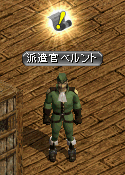
新アイテム「ブレイブブルーム」「インテリジェンステイル」「インテリジェンスバスーン」実装
ビーストテイマー/サマナー、悪魔、メイドの新DXユニークアイテムが実装されました。
モンスターを討伐することで低確率でドロップし、入手することができます。
PVP用武器の詳細は ⇒ ブレイブ/インテリジェンスシリーズ
 |
| 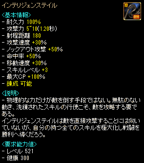 |
| 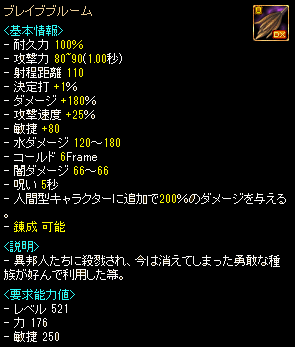 |
「ブレイブバトルアックスNx」武器性能の一部変更
ブレイブバトルアックス[Nx]の攻撃力と、人間型キャラクター追加ダメージが変更されました。
| 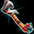 ブレイブバトルアックス[Nx] | |
|---|---|
| 変更前 | 変更後 |
| <基本情報> 攻撃力 70~80 (1.00秒) 射程距離 100 決定打 +[0~1]％ ダメージ +270％ 知恵 +180 水ダメージ 420〜680 コールド 6Frame 闇ダメージ 366〜466 呪い 5秒 敵逃亡 50％ 人間型キャラクターに追加で160％のダメージを与える。 <錬成 オプション 情報> アイテム着用レベル -110 ダメージ +50％ 最終ダメージ +10％ ダブルクリティカルダメージ 10％ 増加 |
<基本情報> 攻撃力 75~85 (1.00秒) 射程距離 100 決定打 +[0~1]％ ダメージ +270％ 知恵 +180 水ダメージ 420〜680 コールド 6Frame 闇ダメージ 366〜466 呪い 5秒 敵逃亡 50％ 人間型キャラクターに追加で180％のダメージを与える。 <錬成 オプション 情報> アイテム着用レベル -110 ダメージ +50％ 最終ダメージ +10％ ダブルクリティカルダメージ 10％ 増加 |
不具合修正
・ミラーダンジョンにて、ポータル系アイテムの「記憶する」と追放天使のスキル「コーリング」が使用できるようになりました。
・決戦都市ヒルドブラントにて「恩寵の魔石」を使用し、対戦フィールドに転送されると、効果が残ったままギルドバトルに参加できていた不具合修正。
・秘密ダンジョン「河口ダンジョンの隠された宝物部屋」完了時に、試練のクリスタルの欠片を入手できなかった不具合修正。
不具合
・Lv900以上のキャラクターで経験値バーにカーソルをあてた際に、出力されるウィンドウ内に「現在のレベルでは、これ以上経験値を獲得できません」と記載されています。
⇒2016年1月21日メンテナンスにて修正完了
・ギルドメンバーの最大上限が200を超えているギルドで「冒険家のお願い」を受諾・完了させてもギルド上限数が250に上昇しません。
⇒調査中
・クリスマスコスチューム「ツリーブルームサンタ」（メイド）、「スノークリスタルサンタ」（黒魔術師）を着用した際、「耳打ち」、「パーティー申請」、スキル支援などキャラクターにカーソルを合わせた上での動作が行えなくなります。
⇒2015年12月24日メンテナンスにて修正完了
・オプションが2つ以上付与されている「クロネの指輪」に「巨商の策略」を使用するとゲームプログラムが強制終了します。
⇒2016年1月21日メンテナンスにて修正完了
・戦士のクリスマスコスチュームで斜め左下に走った際に、グラフィックが正常ではない時があります。
⇒2016年1月21日メンテナンスにて修正完了
・懸賞金付き指名手配「永劫のファントム」のみ、クエストを1日2度受諾することができてしまいます。
（2度目のクエストを受諾しても完了させることはできません。）
⇒2016年1月21日メンテナンスにて修正完了